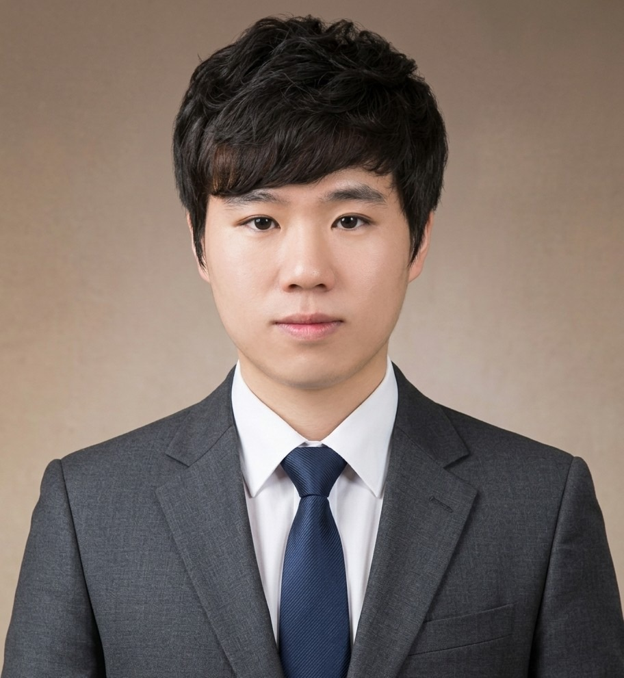

빈칸을 클릭해 작성한 뒤, 인쇄 → PDF로 저장하세요. 파일 이름: park-sangwoo-resume.pdf
| 성명 | 박상우 | 생년월일 | 1992년 4월 3일 |
 |
|---|---|---|---|---|
| 연락처 | 010-5373-9174 | 이메일 | qaz9890@naver.com | |
| 주소 | 대구광역시 수성구 노변공원로 22 동서우방타운 107동 401호 | |||
| 지원분야 | 희망연봉 | |||
학력사항
| 기간 | 학교명 | 전공 | 졸업구분 |
|---|---|---|---|
| 2013년 2월 | 오산대학교 | 경찰행정학과 | 중퇴 |
경력사항
| 기간 | 직장명 / 부서 | 담당업무 |
|---|---|---|
| 2022년 11월 ~ 2023년 8월 | 제노메테리얼카본 | 생산전반 |
자격 · 교육이수
| 취득일 | 자격 / 과정명 | 발행기관 |
|---|---|---|
| 2026년 9월 | 수성알파시티 실무형 AI·SW 인재 육성 Lab | 수성구, 한국커리어혁신진흥원 |
위 기재 내용은 사실과 다름이 없습니다.
| 성명 | 박상우 | 지원분야 |
|---|
성장과정
|
어릴 적부터 주변 사람들의 불편함을 유심히 살피고 손을 내미는 아이였습니다. 친구의 고민을 들어주거나 번거로운 일을 대신 해 주며, 누군가에게 도움이 되는 일에서 가장 큰 가치를 느꼈습니다. 남을 도울 때도 단순한 호의에 그치지 않고, 상대방이 겪는 문제의 원인을 어떻게 해결할지를 고민하며 자랐습니다. 학창 시절에는 학급이나 동아리에서 친구들이 반복 작업이나 정보 부족으로 어려움을 겪을 때마다 문제의 패턴을 살펴, 더 효율적인 정리 방식과 규칙을 만들어 나누곤 했습니다. 하지만 성장하면서, 한 사람이 일대일로 도울 수 있는 범위에는 분명한 한계가 있다는 것을 깨달았습니다. ‘어떻게 하면 나의 노력으로 더 많은 사람의 삶을 동시에 이롭게 할 수 있을까?’라는 고민을 하던 중 프로그래밍을 만났습니다. 내가 쓴 코드 한 줄이 수많은 사람의 시간을 아껴 주는 경험은 큰 울림이 되었습니다. 단순한 자동화를 넘어, 사용자의 맥락과 의도를 이해하고 맞춤형 도움을 주는 AI를 접하면서 개발자로서의 목표가 분명해졌습니다. 어릴 적 누군가의 손을 잡아 주던 마음은, 이제 복잡한 데이터 속에서 문제의 본질을 찾고 더 많은 사람에게 유용한 AI 서비스를 만드는 집요함과 책임감으로 이어지고 있습니다. |
지원동기
|
매일 새로운 가능성을 열어 가는, 에너지가 넘치는 AI 개발자 복잡한 데이터 속에서 정답을 찾아내고, 내가 만든 AI 솔루션이 현실의 문제를 시원하게 해결해 줄 때 가장 큰 짜릿함을 느낍니다. AI 기술은 매일 빠르게 진화하고 있습니다. 그 변화 속에서 새로운 기술을 흡수하고 직접 실험해 보는 과정은 언제나 가슴이 뛰는 도전입니다. 기존 모델을 그대로 쓰는 것에 만족하지 않고, 원천 데이터의 작은 특성까지 파헤치며 성능을 끌어올리는 집요한 과정 자체를 즐깁니다. 기술적 난관에 부딪혀도 피하기보다 여러 가설을 세우고 동료들과 치열하게 소통하며 해답을 찾아내는 긍정적인 에너지를 가지고 있습니다. 혼자만 잘하는 개발자가 되기보다, 팀에 활력을 더하며 현장의 목소리를 실질적인 AI 서비스로 구현해 내고 싶습니다. 끊임없는 가설 검증과 기술적 도전도 즐거운 마음으로 풀어 내며, 매일 팀과 함께 성장하는 AI 엔지니어가 되고 싶습니다. |
성격의 장단점
|
장점 — 막힌 곳을 함께 뚫어내는 협업과 집요한 문제 해결력 주변 동료들의 막힘이나 불편함을 유심히 살피고 돕는 것을 좋아합니다. 이 성향은 AI 개발을 하며 팀의 병목을 함께 해결하는 협업으로 이어졌습니다. 프로젝트 중 데이터 전처리나 모델 오류로 팀원이 난관에 부딪혔을 때, 제 일처럼 머리를 맞대고 원인을 추적하는 데서 큰 보람을 느낍니다. 그 과정에서 배운 기법이나 트러블슈팅 경험은 알기 쉽게 정리해 팀과 나누곤 합니다. 기술적 난제를 만나도 쉽게 포기하지 않습니다. 성능이 나오지 않거나 오류가 생기면 데이터부터 모델 구조까지 여러 방향으로 실험하며 원인을 끝까지 파헤칩니다. 혼자 고립되어 고민하기보다, 동료들과 데이터를 근거로 이야기를 나누며 답을 찾아가는 소통이 저의 가장 큰 강점입니다. 단점 — 모두를 배려하려다 깊어지는 고민 팀원들의 의견을 하나도 놓치지 않고 담아내려다 보니, 초기에 의사 결정이 신중해지거나 디테일에 필요 이상으로 몰입할 때가 있습니다. 모두가 만족하는 완벽한 결과를 만들고 싶은 마음이 개발 속도를 늦출 수 있음을 배웠습니다. 이를 보완하기 위해 지금은 우선순위에 맞춘 빠른 가설 검증을 원칙으로 삼고 있습니다. 성능 지표를 기준으로 당장 중요한 요구사항부터 단계적으로 적용하고, 논의 시간을 미리 정해 두어 실행에 옮깁니다. 일단 실행해 본 뒤 결과를 보고 수정해 가며, 팀과의 소통을 유지하면서도 추진력을 놓치지 않으려 합니다. |
직무 경험 및 입사 후 포부
|
현장에서 다져진 데이터 감각으로 실질적인 AI 가치를 만드는 개발자 다양한 현장을 거치며 쌓은 경험은 이론에만 머물지 않고, 현실의 데이터와 실제 사용자를 깊이 이해하는 AI 개발자로서의 밑거름이 되었습니다. 카본 섬유 생산 현장에서는 미세한 조건 변화가 제품의 품질을 좌우하는 과정을 직접 경험하며 데이터 수집과 공정 최적화의 중요성을 배웠습니다. 수많은 변수 속에서 패턴을 읽고 이상 징후를 감지하던 감각은, AI 모델링에서 원천 데이터의 특성을 파악하고 이상치를 정제해 내는 강점으로 이어졌습니다. 요식업에 종사하던 당시 고객의 행동 패턴을 살피고 페인 포인트를 포착했던 경험은, 모델의 성능 수치에만 매몰되지 않고 실제 사용자가 체감하는 유용함을 기준으로 문제를 정의하는 바탕이 되었습니다. 이러한 현장 중심의 문제 해결과 AI 기술을 결합해 서비스의 실질적인 가치를 키우겠습니다. 입사 후에는 다른 직군과 유연하게 소통하며 현장의 비즈니스 요구 사항을 분명한 AI 개발 목표로 옮기고, 데이터 전처리부터 가설 검증까지 신속하게 수행하며 팀에 기여하겠습니다. 나아가 최신 AI 기술을 꾸준히 익히며 데이터 속 본질을 정확히 읽고, 복잡한 비즈니스 난제를 현실적인 AI 솔루션으로 풀어 내는 엔지니어로 성장하겠습니다. |